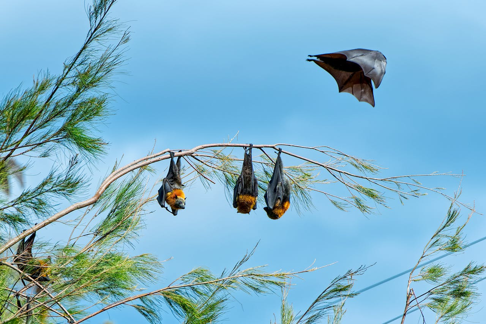
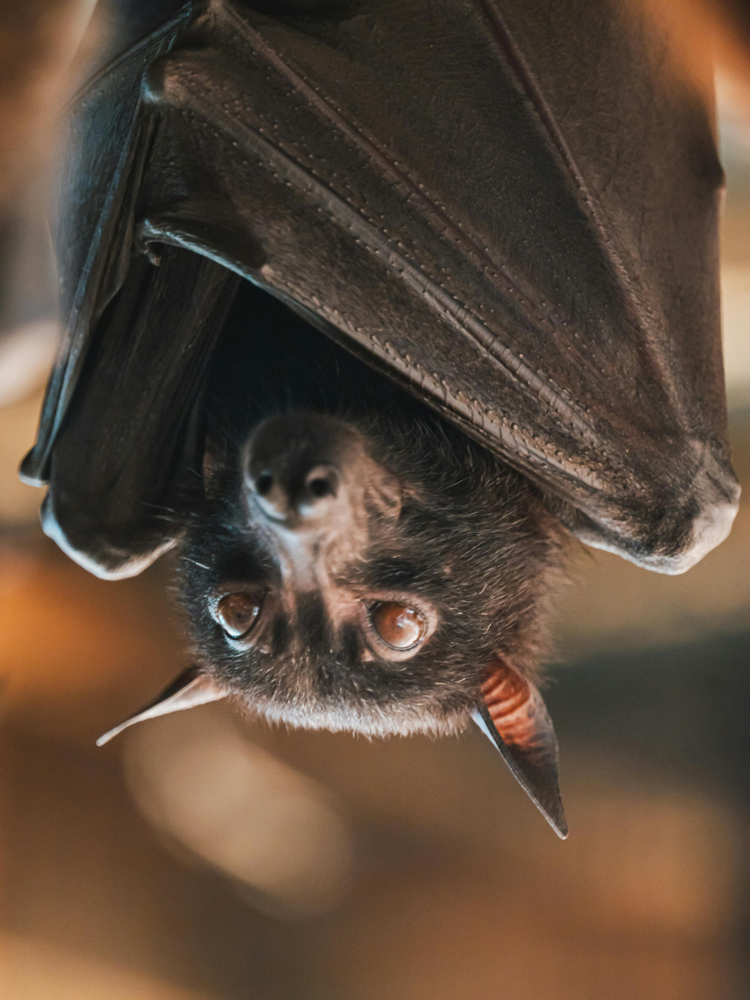

Home
'Bats R cute' is a place made to showcase and talk about Bats!

Bats are placental mammals. After rodents, they are the largest order, making up about 20% of known mammal species. In 1758, Carl Linnaeus classified the seven bat species he knew of in the genus Vespertilio in the order Primates. Around twenty years later, the German naturalist Johann Friedrich Blumenbach gave them their own order, Chiroptera. Since then, the number of described species has risen to over 1,500, traditionally classified as two suborders: Megachiroptera (megabats) and Microchiroptera (microbats/echolocating bats). Not all megabats are larger than microbats. Several characteristics distinguish the two groups. Microbats use echolocation for navigation and finding prey, but megabats, apart from those in the genus Rousettus, do not. Accordingly, megabats have well-developed eyesight. Megabats have a claw on the second finger of the forelimb, external ears close to form a ring, and lack a tail. They only feed on plant material like fruit and nectar.

Bats are winged mammals; the only mammals capable of true and sustained flight. Bats are also more agile in flight, compared to most birds. Depending on the culture, bats may be symbolically associated with positive traits, such as protection from certain diseases or risks, rebirth, or long life, but in the West, bats are popularly associated with darker themes, such as Halloween, witchcraft, vampires, and death. Bats do provide humans with a few benefits, at the cost of some disadvantages. Bats eat insects, pests, which helps reduce the need for humans to deal with insects. Bats are occationally grouped up in big enough groups and close by to serve as tourist attractions, and they are also used as food in other continents and regions of the world, such as Africa, Asia, the Pacific and the Caribbean. Due to their physiology, bats are among many animals that carries diseases, such as rabies, and since they are mobile, social, and long-lived, they can quickly spread diseases among themselves. If humans were to interact with bats, these traits become a potential danger to humans.